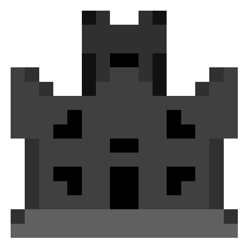
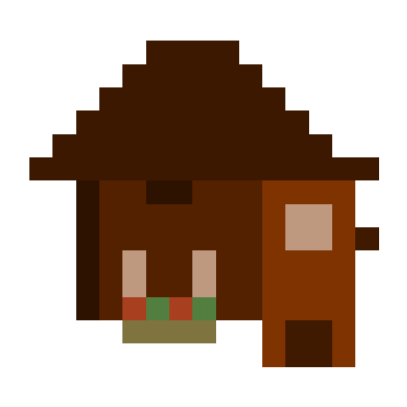
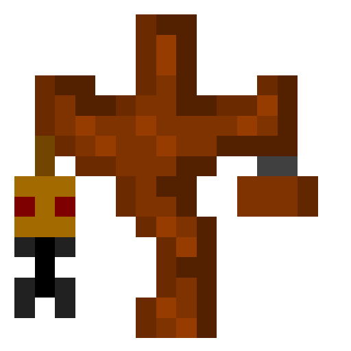

Ancient Temple
It spawns underground and has a lot of suspicious gravel with a probability of geting a unique loot: the improbability table.

It spawns underground and has a lot of suspicious gravel with a probability of geting a unique loot: the improbability table.

This house was from a tester, but now is abandoned, it was corrupted and iserted into the game as a feature, you can find it in cold biomes and if you loot it there's a probavility to get a Porky Plush.

It spawns very far away, it's an easter egg structure with some lore and no loot.
It spawns in many types of biomes such as deserts, meadows, badlands, etc...
It was burned and inserted into the code as a feature, there you can find a Oveji Jones Plush.
| ITEM | QTT | PROB |
|---|---|---|
| Black Candle | 1-4 | 70% |
| Cobbled Deepslate | 2-13 | 69% |
| Sculk | 1-8 | 50% |
| Dripstone | 1-7 | 50% |
| Raw Gold | 1-8 | 32% |
| Crying Obsidian | 1-4 | 23% |
| Bronze Porkoin | 1-3 | 15% |
| Improbability Table | 1 | 3% |
| ITEM | QTT | PROB |
|---|---|---|
| Cobblestone | 1-23 | 60% |
| Oak Planks | 1-23 | 60% |
| Diorite | 1-10 | 55% |
| Granite | 1-10 | 55% |
| Andesite | 1-10 | 55% |
| Sand | 1-17 | 50% |
| Rotten Flesh | 1-12 | 50% |
| String | 1-8 | 40% |
| Bone | 1-5 | 40% |
| Gunpowder | 1-5 | 30% |
| Charcoal | 1-8 | 30% |
| Iron Pickaxe [ENC] | 1 | 20% |
| Silver Porkoin | 1-2 | 10% |
| Porky Plush | 1 | 2% |
| ITEM | QTT | PROB |
|---|---|---|
| Crimson Fungus | 1-4 | 50% |
| Potato | 12-36 | 45% |
| Cooked Porkchop | 1-16 | 40% |
| Leather | 1-16 | 40% |
| Gold Ingot | 1-12 | 30% |
| Golden Carrot | 1-32 | 20% |
| Enchanted Book | 1 | 20% |
| Bronze Porkoin | 1-5 | 20% |
| Porky Plush | 1 | 15% |
| Diamond | 1-6 | 15% |
| Silver Porkoin | 1-5 | 15% |
| Diamond Chestplate [ENC] | 1 | 10% |
| Golden Porkoin | 1-5 | 10% |
| ITEM | QTT | PROB |
|---|---|---|
| Gravel | 1-3 | 70% |
| Diorite | 1-5 | 60% |
| Cobweb | 1 | 50% |
| Rotten Flesh | 1-17 | 45% |
| Fermented Spider Eye | 1-3 | 40% |
| Paper | 1-5 | 35% |
| Glass Bottle | 1-12 | 35% |
| Leather | 1-8 | 30% |
| Flashlight Battery | 1-2 | 30% |
| Iron Nugget | 1-27 | 20% |
| Packed Ice | 1-6 | 20% |
| Iron Sword [ENC] | 1 | 15% |
| Porkclock | 1 | 15% |
| Skeleton Skull | 1 | 10% |
| Silver Porkoin | 1-2 | 10% |
| Enchanted Golden Apple | 1 | 2% |
| Oveji Jones Plushie | 1 | 2% |
| ITEM | QTT | PROB |
|---|---|---|
| Red Wool | 1-12 | 50% |
| Hay Bale | 8-32 | 45% |
| Cooked Mutton | 1-16 | 40% |
| String | 6-32 | 40% |
| Redstone Dust | 16-64 | 30% |
| Bottle o'Enchanting | 1-8 | 20% |
| Enchanted Book | 1 | 20% |
| Bronze Porkoin | 1-5 | 20% |
| Oveji Jones Plush | 1 | 15% |
| Diamond | 1-6 | 15% |
| Silver Porkoin | 1-5 | 15% |
| Diamond Leggings [ENC] | 1 | 10% |
| Golden Porkoin | 1-5 | 10% |